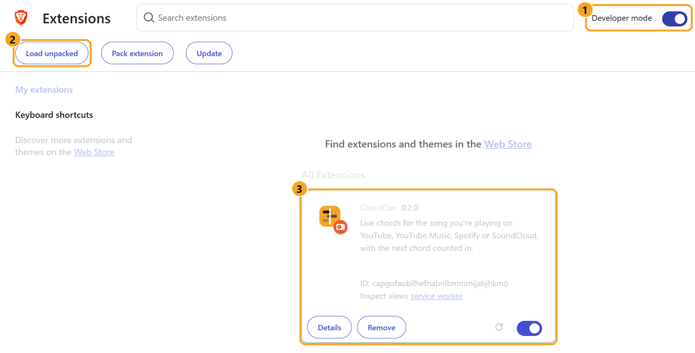

Last step: add ChordCue to your browser
Browsers only let you add extensions like this by hand. It takes about a minute.
ChordCue works in Brave, Chrome, Edge or Opera. Open this page in one of them: copy its address from the address bar and paste it there.
-
Open the extensions page
Copy this, paste it into the address bar at the top of your browser, and press Enter.
chrome://extensions -
Turn on Developer mode
It's a switch in the top right corner of the extensions page (marked 1 in the picture below).
-
Click “Load unpacked” and pick the ChordCue folder
The button appears at the top left once Developer mode is on (marked 2). A folder window opens. Copy this folder, paste it into the folder window's address bar, press Enter, then click Select Folder.
ChordCue\extensionChordCue then shows up in the list (marked 3).

What it looks like in Brave. Chrome and Edge look almost the same. -
Pin the ChordCue icon
Click the puzzle-piece icon next to the address bar, then the pin next to ChordCue, so its icon is always visible.
-
Play a song and click the ChordCue icon
Open a song on YouTube, YouTube Music, Spotify or SoundCloud and click the ChordCue icon. The chords appear in a panel next to the page. The first time you play a song it takes about 20 seconds to work out the chords; after that it's instant.